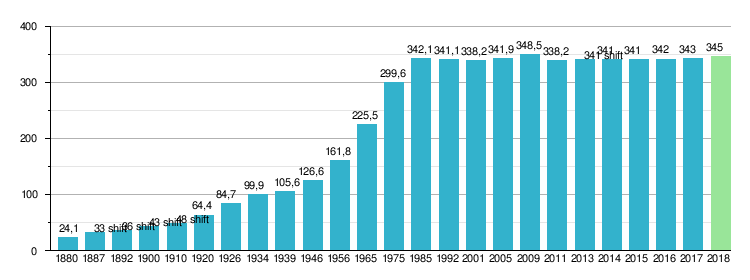

Пловдив
Население
Брой на населението
Според данните на НСИ към 31.12.2017 г., Пловдив е вторият по големина град в България с 346 893 жители, а община Пловдив (включваща единствено град Пловдив) е втора в България след Столична община и преди община Варна (345 369 – включваща град Варна и още 5 населени места).
Пловдив е третият по големина български град преди и по време на Освобождението след Русе и Варна. Според данни от 1880 г. в града живеят 24 053 души. След Съединението за няколко години става най-голям град с 33 032 жители, срещу 30 428 жители на София. Според преброяването от 1946 г. Пловдив е вторият по-големина град в България със 126 563 души, срещу 366 801 за София.
В Пловдив освен българи, живеят и турци, гърци, арменци, евреи и цигани. Етнически обособени квартали в Пловдив са „Хаджи Хасан махала“, „Шекер махала“ и „Столипиново“.

Религии
В града преобладава православието, като има население и от всякакви други клонове, самоопределящи се като християнски – западнокатолици, източнокатолици, арменско-апостолическо изповедание, протестанти (баптисти, конгрешани, петдесятници и др.), мормони, адвентисти и др. Конгрешанският Съюз на евангелските съборни църкви има в Пловдив две църкви – Евангелска съборна църква и Арменска евангелска църква.
Пловдив е седалище на Пловдивската епархия на Българска православна църква. През 2007 г. за митрополит на епархията е избран негово високопреосвещенство Николай Пловдивски.
Покровител на града е свети апостол Ерм, един от седемдесетте апостоли на Иисус Христос.В града има мюсюлманска и еврейска общност. Има храмове на всички религии.
Начална страница